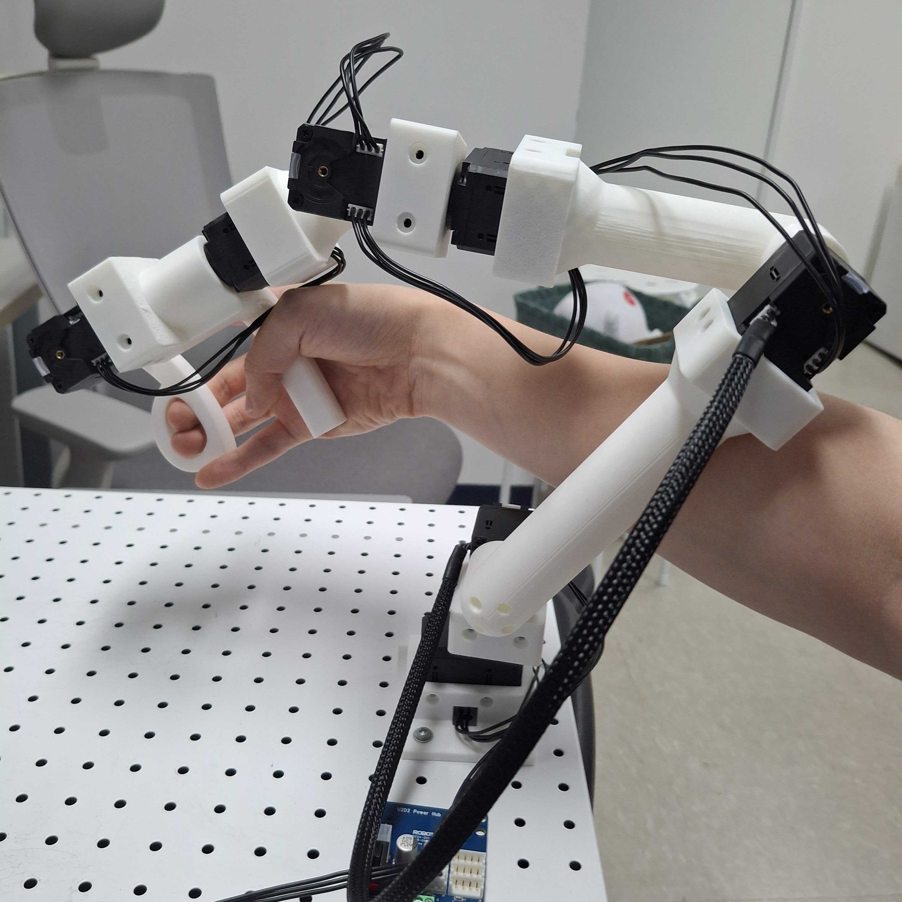
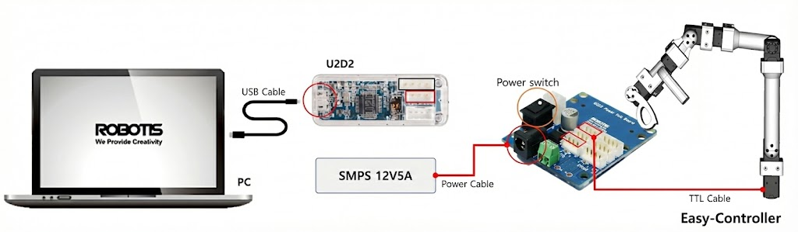

5 Easy-Controller
Easy-Controller 리더 로봇형 컨트롤러 사용법을 안내합니다.
🎛️ Easy-Controller란?
컨트롤러 소개
Easy-Controller는 로봇과 기구학적으로 동일하게 제작되어 로봇을 조종할 수 있는 리더 로봇형 컨트롤러 장치입니다.
직관적인 조작으로 로봇의 움직임을 정밀하게 제어할 수 있습니다.
🔌 전원 및 보드 연결
전원 연결: 컨트롤러에 전원을 연결합니다.
보드 연결: 컨트롤러 보드를 컴퓨터에 연결합니다.
연결 후 LED 표시등을 확인하여 정상 작동 여부를 점검하세요.
⚠️ 주의사항
전원 연결 시 극성을 확인하고, 정격 전압을 준수하세요.